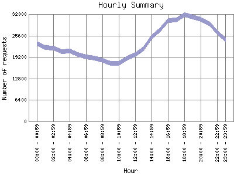

Analog 5.24
Analog 5.24 Report Magic for Analog 2.13
Report Magic for Analog 2.13The Hourly Summary identifies the level of activity broken down by each hour. Remember that one page hit can result in several server requests as the images for each page are loaded. This summary also compares the level of activity during working hours and after hours as a total for the report time frame.

| Hour | Number of requests | Percentage of the requests | |
|---|---|---|---|
| 1. | 00:00 - 00:59 | 23,184 | 4.10% |
| 2. | 01:00 - 01:59 | 21,951 | 3.88% |
| 3. | 02:00 - 02:59 | 21,850 | 3.86% |
| 4. | 03:00 - 03:59 | 20,861 | 3.69% |
| 5. | 04:00 - 04:59 | 21,070 | 3.72% |
| 6. | 05:00 - 05:59 | 19,967 | 3.52% |
| 7. | 06:00 - 06:59 | 19,181 | 3.39% |
| 8. | 07:00 - 07:59 | 18,816 | 3.32% |
| 9. | 08:00 - 08:59 | 18,199 | 3.21% |
| 10. | 09:00 - 09:59 | 17,398 | 3.8% |
| 11. | 10:00 - 10:59 | 17,385 | 3.7% |
| 12. | 11:00 - 11:59 | 18,858 | 3.32% |
| 13. | 12:00 - 12:59 | 19,952 | 3.52% |
| 14. | 13:00 - 13:59 | 21,662 | 3.82% |
| 15. | 14:00 - 14:59 | 25,132 | 4.43% |
| 16. | 15:00 - 15:59 | 27,302 | 4.82% |
| 17. | 16:00 - 16:59 | 30,131 | 5.31% |
| 18. | 17:00 - 17:59 | 30,183 | 5.32% |
| 19. | 18:00 - 18:59 | 31,879 | 5.62% |
| 20. | 19:00 - 19:59 | 31,153 | 5.50% |
| 21. | 20:00 - 20:59 | 30,394 | 5.37% |
| 22. | 21:00 - 21:59 | 29,147 | 5.14% |
| 23. | 22:00 - 22:59 | 26,523 | 4.69% |
| 24. | 23:00 - 23:59 | 24,269 | 4.29% |
| Work Hours (8:00am-4:59pm) | 196,019 | 34.60% | |
| After Hours (5:00pm-7:59am) | 370,428 | 65.40% | |
This report was generated on May 22, 2016 02:29.
Report time frame December 18, 2007 17:05 to May 22, 2016 05:56.
| Web statistics report produced by: | |
| Analog 5.24 | Report Magic for Analog 2.13 |